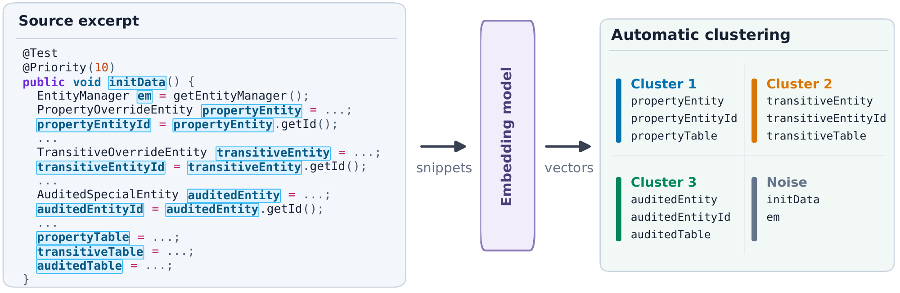

BTTF：以人的理解，衡量代码
代码可读性是软件工程中研究已久的经典问题。怎样判断一段代码是否好读，怎样指出它难读的原因，直到今天仍没有得到令人满意的解决。如今，大语言模型在代码生成和理解上表现出色。把一段难读的代码交给它，询问哪里有问题、该怎么改，我们总能得到一些答案。然而，这些答案缺少量化依据，也不够全面，有时甚至不够具体。
即使让 AI 自动修改代码、提升可读性，也无法保证改后的代码更符合人类的阅读感受。要判断一次修改是否真正让代码更好读，我们需要与人类判断一致的评分，也需要清楚哪些代码属性影响了评分、影响有多大。
我们提出了 BTTF（Back to the Future，回到未来），将经典的线性回归与预训练模型提供的新度量结合起来。我们用预训练模型测量代码，通过 11 个特征计算可读性分数。每个特征对分数的贡献都可以查看，哪些属性拉低了评分、影响有多大，也就有了具体依据。[1]
从一段混淆代码看阅读困难
下面这段代码用来查找月份偏移值，改编自一个紧凑的星期计算实现。这是一种代码混淆的写法：本来可以直接列出的一组偏移值，被藏进了一个看不出含义的字符串。程序取出字符，读取字符编码，再对七取余，才还原出需要的值。计算没有多复杂，但读者得先解开这层编码，才能看懂原本简单的查表逻辑。

此前的代表性可读性模型在这个例子上都判断错了。这些方法既包括人工设计特征的模型，也包括深度学习模型。它们给出了较高评价，五位开发者却一致给出最低评分。图中的 Posnett、Scalabrino、Dorn 和 Mi 就是这四种方法。[3, 4, 5, 6]读者面对这串字符和取余运算，很难看出它们与月份偏移的关系，更难理解为什么能得到正确的值。
这个误判暴露了已有指标漏掉的关键：可读性取决于人能否理解代码。长度、结构、文本和视觉属性描述了代码的外在形式，却没有充分刻画读者如何从细节中理解含义、组织信息、建立前后联系。这里的混淆恰好破坏了这个过程：查找表被压缩成几个字符，读者却要花更多力气还原它。DeepSeek 和 BTTF 都识别出了这里的困难；BTTF 还指出了拉低评分的具体代码属性。
而且，已有方法很难把分数转成具体的改进方向。深度学习模型把判断藏在学到的表示里，无法直接列出哪些明确的代码属性造成了扣分。Dorn 和 Scalabrino 虽然有可见的特征，但部分特征的权重方向与其原本含义相反，让“改好这个属性是否就能加分”变得含糊。Posnett 的方向是一致的，却只使用行数和两项综合指标，能概括整段代码，难以指出究竟是哪种写法出了问题。
在这个例子里，影响最大的是赋值右侧的计算和那串编码字符：只看前面的代码，很难预期这里会出现这样的写法。BTTF 用赋值值惊讶度（赋给变量的内容有多出乎预期）和字面量尾部惊讶度（代码中最出乎预期的数字或字符串有多难预测）测量这种异常。它们对应的阅读困难很具体：读到这里，我们得停下来，弄清楚这一步为什么要这样写。
从人的阅读过程出发，重新衡量可读性
读一段陌生代码时，我们通常先看懂具体语句，再逐步拼出整段代码的意图。我们很难像计算机那样，精确记住每一个细节，而会边读边理解、归纳：这几个判断是在检查输入，那几次赋值是在更新状态。随着这些含义逐渐清楚，我们便能把握整个程序在做什么，不必一直记着每个变量和操作。[9, 10]
同样的目标，组织不同，理解的难度显然也会不同。一段代码可以先把输入检查写完整，再更新状态；也可以把检查、计算和状态更新穿插在一起。后者需要我们来回连接分散的信息，才能拼出完整逻辑。细节怎样组织、是否顺着前文展开，都会影响阅读。
因此，除了行长、操作密度这些传统属性，我们还需要知道两件事：代码的含义是否组织清楚，新出现的内容是否接得上前文。
语义组织：把零散信息归纳成清晰概念
已有的模型没有明确测量读者对代码信息的归纳。深度学习模型依靠数据拟合，把判断留在难以解释的内部表示中；视觉模型主要考察排版和呈现；其他特征模型则组合多个统计属性，其中部分权重方向还与特征含义相反。当关键的阅读因素没有被测量时，继续堆叠混杂的统计指标，也很难补上这个缺口。最后得到的特征组合可以拟合分数，却很难解释阅读困难来自哪里。
我们的早期模型（只使用嵌入特征的版本，embedding-only）也遇到了这个问题。它测量了语义组织，却缺少对上下文预测难度的直接测量，字节熵因而仍在特征选择中占据重要位置。字节熵能提供统计线索，却说不清具体哪种写法出了问题。加入代码结构层面的惊讶度后，它才被更具体的度量取代。这段经历让我们看到，特征工程首先要补齐对阅读困难的测量；关键因素缺失时，反复筛选和组合现有指标，很容易留下一个预测有效、解释却含糊的模型。
我们的直觉是，语义相近的名字和操作，更可能服务于同一个任务。比如，一组变量名共享有意义的前缀，分别表示某个实体、它的编号和对应的表，读者很容易把它们看作同一类对象，归纳到一起。BTTF 用嵌入模型捕捉这种语义相似性，再通过聚类自动分组，把这种阅读中的归纳变成可以测量的属性。
嵌入模型或大语言模型的嵌入空间可以想成一张“含义地图”：模型把词或代码片段变成一组数字，给它们安排位置。一个经典例子是“国王 − 男人 + 女人 ≈ 女王”，对这些词的向量做加减，结果会接近“女王”的位置。含义之间的关系，由此可以用距离和方向来表示。[8]
我们把代码里的名字和片段放进这样的空间，寻找含义相关的组，再看它们如何分布。下面这个真实例子来自 Scalabrino 数据集：propertyEntity、propertyEntityId 和 propertyTable 分别是实体、它的编号和对应的表，都属于同一组；另外两类实体也各有一组相关名字。

模型自动找到了这三组关系。我们读这段代码时，也会自然地把相关变量归到三类实体中，理解它在做三件事：准备 property 的数据、准备 transitive 的数据，以及准备 audited 的数据。我们通常不会逐个记住这些变量名，而会把它们抽象成这三件事，进而理解整个方法是在初始化数据。
上下文惊讶度：衡量理解代码的额外努力
代码里的信息能分组，还需要接得上前文。传统的字节熵只统计字符分布：同一批字符重新排列，统计结果可以不变，代码的含义却可能完全不同。它看不到某个值是否得到前文解释，也无法指出具体哪种写法导致阅读困难。
我们读到 total = price * ... 时，很容易想到后面可能是数量。如果接下来出现的是一个毫无铺垫的值，就得停下来重新理解。我们的第二个直觉便来自这里：前文能否帮助我们理解接下来的内容，也应该成为可读性度量。
大语言模型可以为这件事提供信号。在预训练时，生成式大语言模型的一项核心任务，就是根据前文预测下一个 token。经过训练，模型学会了给接下来可能出现的内容分配概率。实际出现的内容概率越低，“惊讶度”就越高。BTTF 用这种惊讶度找出代码里缺少铺垫、突然出现的内容，衡量它们有多出乎预期。在月份偏移的例子里，那串混淆字符很难从上下文中预期，这种异常便落到了具体的字面量特征上。
因此，我们用嵌入度量衡量整个程序的语义分布，以及这些含义组织得有多紧凑；用惊讶度刻画阅读过程中，理解出乎预期的内容需要付出多少额外努力[11]。在这两类度量之外，我们也保留了部分传统度量。
准确评分，清晰解释
在六个人类评分数据集、超过一千份程序上，BTTF 的整体评分表现大幅领先所有参与评测的已有可读性方法。与人类判断的平均相关性相比最强基线最高提升了 0.101，达到了代码可读性评分领域新的 State-of-the-Art（SOTA）水平。[1]
即使把此前研究中表现最好的零样本提示词[7]用在 DeepSeek V4 Pro 和 GPT-6.1 Sol 这样的前沿模型上，BTTF 依然明显领先。大模型可以给出流畅的评价，但在判断代码究竟有多好读这件事上，我们这套明确的度量给出了更准确的分数。
BTTF 的可解释性也解决了已有方法的核心问题。传统特征模型可能出现权重方向矛盾，或者依赖难以转化为具体改进方向的综合指标；深度模型和直接评分的大语言模型则无法列出每项代码属性究竟影响了多少分。BTTF 把 11 项特征的贡献逐项呈现，这些贡献直接构成最终评分，并且在所有测试的预训练模型组合中保持一致的方向。哪些属性扣了分、扣了多少、主要问题在哪里，都有明确依据。
敏锐识别代码可读性的下降
我们也把同一段代码故意改得更难读：删掉注释、弄乱名字、插入干扰代码，或者把排版挤在一起。这些修改给了我们一个清楚的检验标准：改完之后，可读性评分应该下降。
在真实项目的 Java 和 Python 代码上，BTTF 分别识别出了 93.8% 和 87.6% 的可读性下降，大幅领先已有的本地可读性模型。即使与表现最强的本地基线 Dorn 相比，整体响应率差值也分别达到 14% 和 19.2%。
这一表现与最前沿大语言模型在该项任务上的表现几乎持平。要知道，这些扰动对大语言模型来说相当刺眼，比如在代码中添加死代码，或直接把变量名改成无意义的字符。大语言模型很容易识别这类明显干扰；日常代码的阅读困难往往更细微，需要判断的远不止这些显眼的问题。
从指出问题，到量化每项影响
再看另一个例子（Buse 数据集中的第 66 个样本[2]）。它只有三条语句：
mProgramTable.changeSelection(row, 0, false, false);
Program p = (Program) mProgramTableModel.getValueAt(row, 1);
JPopupMenu menu = devplugin.Plugin.getPluginManager()
.createPluginContextMenu(p, CapturePlugin.getInstance());为方便阅读调整了换行；测量使用原始代码。
人类读者给这段代码的评价偏低，DeepSeek 和 GPT-6.1 却给了高分。GPT 的一份解释也指出了短名 p、数字索引、含义不清的布尔参数和过长的调用。问题找到了几个，分数却还是很高。
| 评价来源 | 评分 |
|---|---|
| 人类读者 | 2.60 / 5 |
| DeepSeek V4 Pro | 17 / 20 |
| GPT-6.1 Sol | 18 / 20 |
| BTTF | 0.135 / 1 |
两个大模型的评分为三次运行的平均值。
BTTF 的低分更接近人类评价。最大的扣分来自操作符密度，然后是异常字面量，以及难以预测的标识符和赋值。长行也扣了分，但影响小得多。每项贡献都列在分数旁边，问题的相对轻重也随之明确。
| 主要扣分项 | 这段代码中的问题 | 评分贡献 |
|---|---|---|
| 操作符密度 | 三条语句中集中出现了许多操作。 | −0.271 |
| 字面量尾部惊讶度 | 数字等具体值难以从前文预期。 | −0.115 |
| 标识符起始惊讶度 | 部分名字的开头难以从前文预期。 | −0.053 |
| 赋值值惊讶度 | 赋值右侧的内容难以从前文预期。 | −0.048 |
| 最长行 | 原始代码最长一行有 116 个字符。 | −0.018 |
列出主要扣分项，数值直接参与 BTTF 评分计算；绝对值越大，影响越大。
我的选择与下一步研究
我们有意没有采用视觉模型。对我而言，代码看起来是否舒服，更容易受到个人习惯和偏好的影响。我希望评分有更明确的依据，因此更倾向于采用有信息论背景、或受到认知科学启发的特征，测量代码中的信息怎样组织，以及阅读时理解这些信息需要付出多少努力。
但我并不否认视觉特征的价值。我们毕竟是用眼睛读代码，排版和视觉布局能够承载大量信息，也确实会影响阅读。这让 Dorn 的视觉方案有独立的价值，也让 Mi 用 CNN 学习代码呈现的做法有合理的出发点。我选择另一条路线，是希望更清楚地说明评分依据。
对于“大语言模型能应对低可读性代码，因此可读性的重要性已经减弱”这个观点，我并不认同。单个方法或类上的实验，距离真实项目中的持续阅读、跨文件理解和修改代码还有很大差别。即使在这些实验里影响较小，也只能说明模型在特定任务和规模下有一定的鲁棒性，不能说明可读性没有影响。我们将进一步研究，这种影响是否会随着真实项目规模的扩大而累积。
何况，在金融核心代码、复杂系统的核心代码，以及涉及隐私的场景中，安全和保密要求往往限制了大语言模型的大规模使用。开发和审核仍然离不开人，至少目前如此。模型能够处理难读的代码，也不能替代人的理解和判断，更不能让面向人的可读性失去意义。
参考文献
- Tairan Wang and Earl T. Barr. Back to the Future: Regressing Readability Features from LLMs. arXiv:2610.04641, 2026.
- Raymond P. L. Buse and Westley R. Weimer. Learning a Metric for Code Readability. IEEE Transactions on Software Engineering, 36(4), 546–558, 2010.
- Daryl Posnett, Abram Hindle, and Premkumar Devanbu. A Simpler Model of Software Readability. MSR, 73–82, 2011.
- Jonathan Dorn. A General Software Readability Model. University of Virginia, 2012.
- Simone Scalabrino, Mario Linares-Vásquez, Rocco Oliveto, and Denys Poshyvanyk. A Comprehensive Model for Code Readability. Journal of Software: Evolution and Process, 30(6), e1958, 2018.
- Qing Mi, Jacky Keung, Yan Xiao, Solomon Mensah, and Yujin Gao. Improving Code Readability Classification Using Convolutional Neural Networks. Information and Software Technology, 104, 60–71, 2018.
- Wendkûuni C. Ouédraogo et al. Human-Aligned Code Readability Assessment with Large Language Models. arXiv:2510.16579, 2025.
- Tomas Mikolov, Wen-tau Yih, and Geoffrey Zweig. Linguistic Regularities in Continuous Space Word Representations. NAACL-HLT, 746–751, 2013.
- Nick Chater and Paul Vitányi. Simplicity: A Unifying Principle in Cognitive Science?. Trends in Cognitive Sciences, 7(1), 19–22, 2003.
- Nancy Pennington. Stimulus Structures and Mental Representations in Expert Comprehension of Computer Programs. Cognitive Psychology, 19(3), 295–341, 1987.
- Roger Levy. Expectation-Based Syntactic Comprehension. Cognition, 106(3), 1126–1177, 2008.